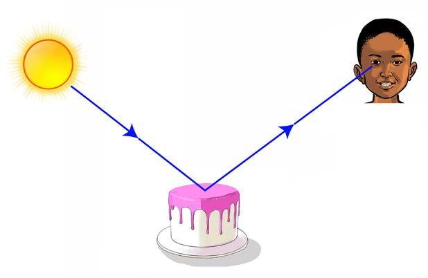

Hitimisho
Hii inaonesha kuwa, mwanga husafiri katika mstari mnyoofu.
Sifa za mwanga
Sifa za mwanga ni kusafiri katika mstari mnyoofu, kutengeneza kivuli, kupinda na kuakisiwa.
Kazi ya kufanya namba 4
Kuchunguza mwanga unavyosafiri katika hewa
1.
Chunguza asubuhi na mapema jua linapochomoza. Je, umeona au umehisi nini?
2.
Weka kumbukumbu ya kile unachokiona au unachokihisi.
Ukiamka asubuhi na mapema wakati jua linaanza kuchomoza utaona miale ya mwanga. Miale hii huonekana inasafiri katika mistari iliyonyooka. Mwanga unatuwezesha kuona vitu mbalimbali. Chunguza Kielelezo namba 8 kinachoonesha au kinachobainisha namna mwanga unavyosaidia kutambua vitu mbalimbali.

Maelezo ya picha: Mwanga wa jua unaangukia kwenye keki kisha unaingia kwenye jicho la mtoto. Hivyo mtoto anaweza kuona keki.Kielelezo namba 8: mwanga unatusaidia kuona vitu mbalimbali.